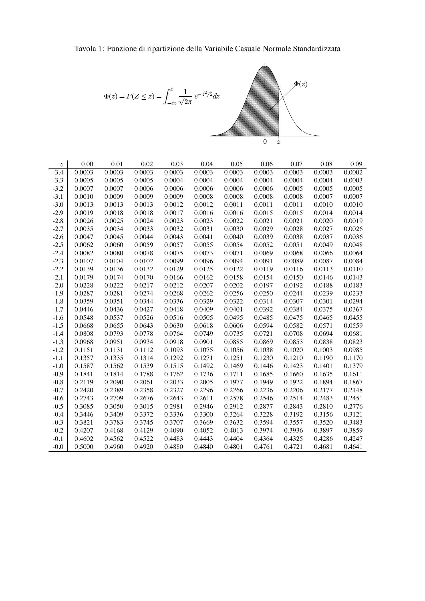
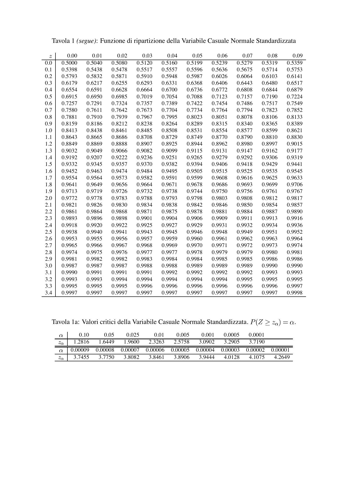
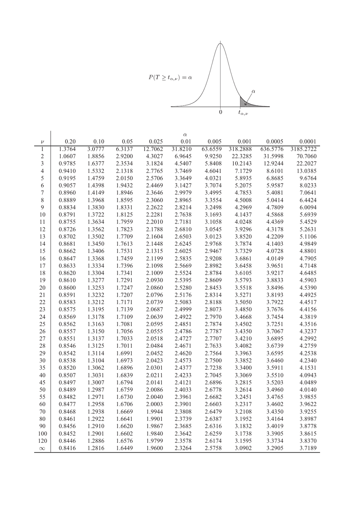
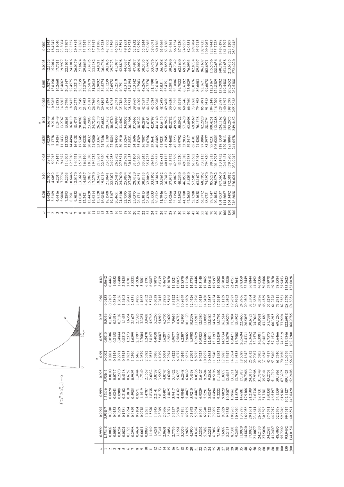
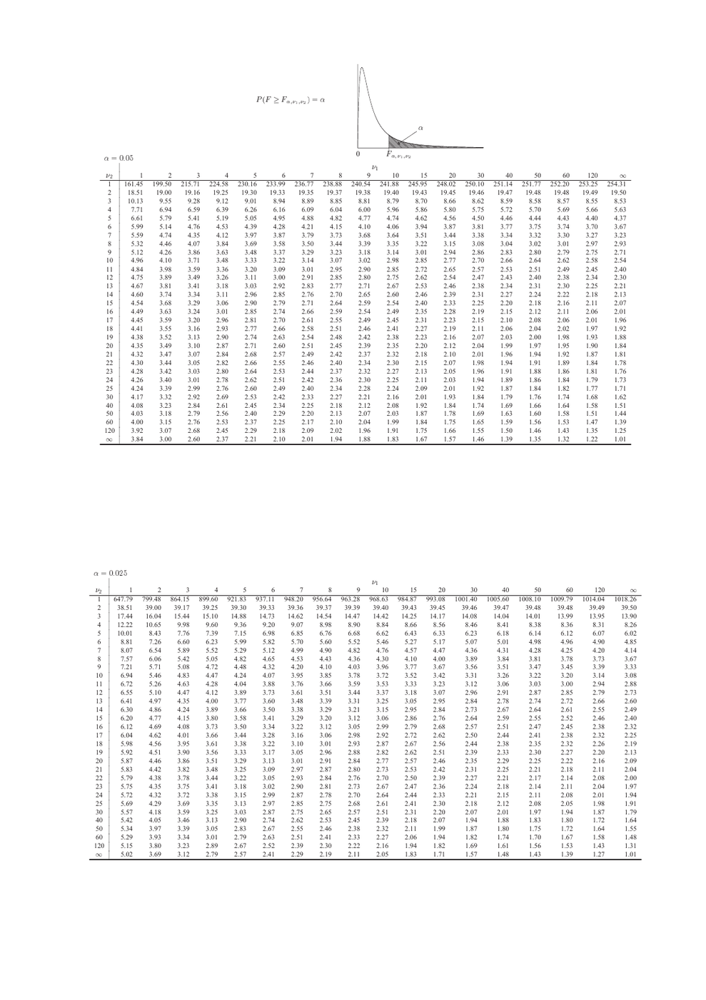
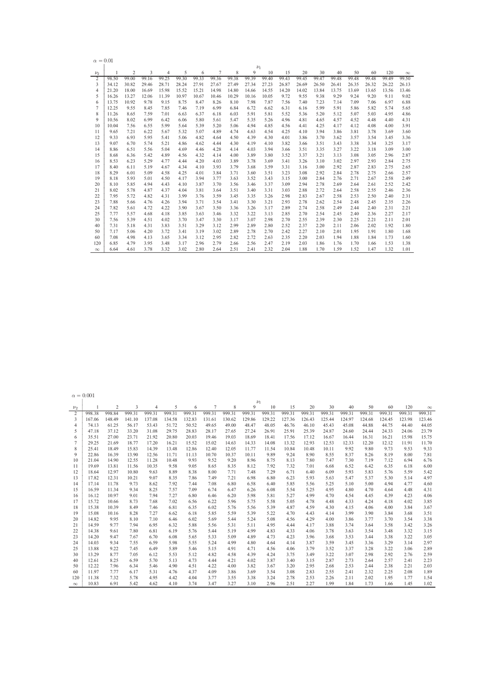
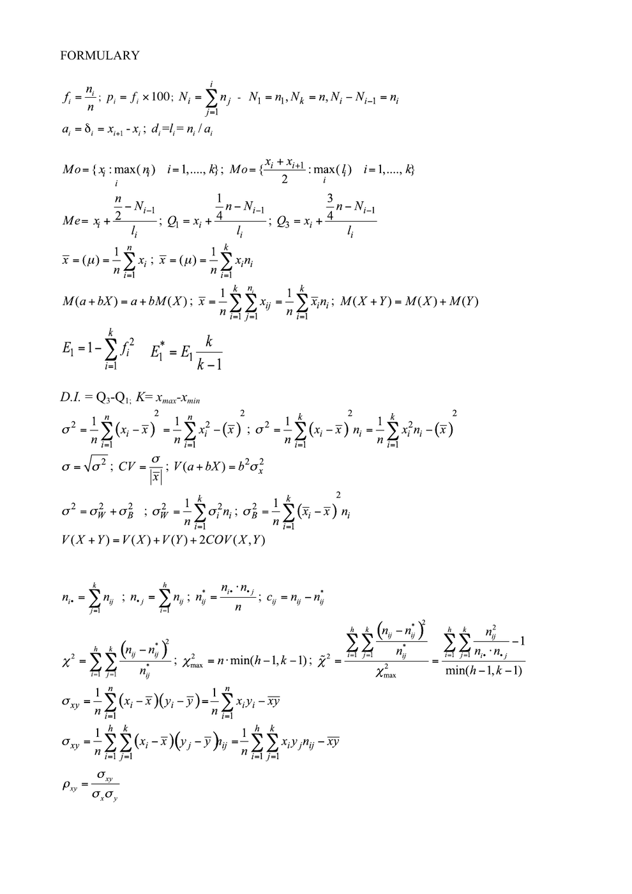
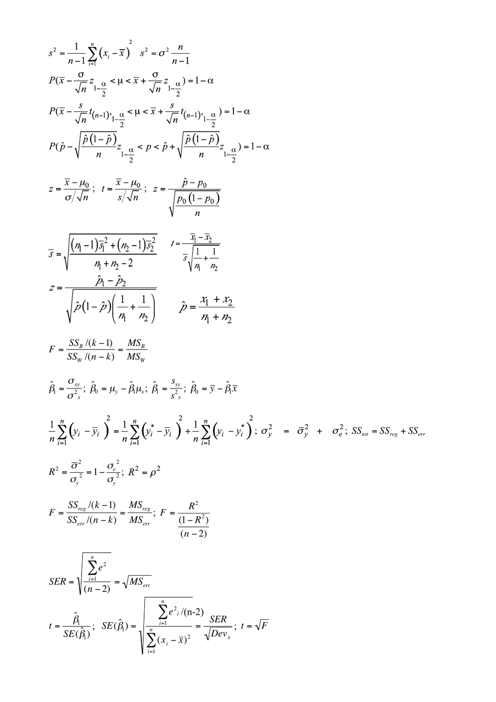

Start using these documents now
The tables and formula sheet will be available during the written exam. The purpose is not to memorise every formula, but to recognise the problem, locate the correct tool and apply it correctly.
- Write the parameter or hypothesis.
- Identify the statistic and its distribution.
- Calculate α and decide whether it is one- or two-tailed.
- Find the degrees of freedom and critical value.
- Calculate and interpret in context.
| Symbol | Meaning |
|---|---|
| SD or s | Spread of individual observations |
| SE | Spread of an estimator; often SD/√n |
| SER | Residual standard error in regression |
| α | Significance level or total tail probability |
| df | Degrees of freedom used to select a table row |
Normal and Student's t tables
The normal table reports cumulative area to the left of z. The t table reports right-tail critical values for each degrees-of-freedom row.


Example: z = 1.23
Use row 1.2 and column .03. The entry is 0.8907, so P(Z≤1.23)=0.8907.
Right tail
Two-sided probability

For a 99% interval, α=0.01 and α/2=0.005. In the same row df=11, move to column 0.005.
Chi-square and F tables
Both distributions are right-skewed and use degrees of freedom. The F distribution requires two degrees of freedom: numerator and denominator.

If the computed statistic exceeds 5.9915, reject independence at the 5% level.


For one-way ANOVA:
For simple regression, df₁=1 and df₂=n-2. Locate the numerator df in the column and the denominator df in the row, following the headings printed on the supplied table.
Navigate the formula sheet by question type
The current PDF is a draft that will be revised, but it already contains the core formulas used in the course. Learn to recognise the relevant block.


| Question wording | Look for |
|---|---|
| Appropriate position index | Mode, median or mean based on variable type |
| Compare variability | Variance, SD, CV, interquartile range |
| Confidence interval | Mean with σ known/unknown or a proportion |
| Do two means differ? | Two-sample t statistic |
| Are two categorical variables associated? | Expected frequencies and χ² |
| Do k means differ? | ANOVA F |
| Is the regression slope significant? | SER, SE(β̂₁), t, F and R² |
If SD is supplied: calculate SE by dividing by √n.
If SE is supplied: use it directly; do not divide again.
If SER and sᵧ are supplied: recover R² from SSE and SST.
If r is supplied: in simple regression R²=r².
If sums of squares are supplied: compute R² and the relevant mean squares directly.
Guided table-and-formula practice
Answer each question using the supplied PDFs. Feedback explains the decision path, not only the final number.
1. A 95% confidence interval with n=18 and unknown σ
Which row and column of the t table are required?
2. A table reports group means and standard errors
How do you obtain the SE of the difference for independent groups?
3. A 3×4 contingency table is tested at α=0.01
Which chi-square row and column are required?
4. In a simple regression, r=-0.40 and n=102
Which sequence is valid?
5. A 95% confidence interval with n=49 and unknown σ
The exact row df=48 is not printed in the supplied t table. Which row should you use?